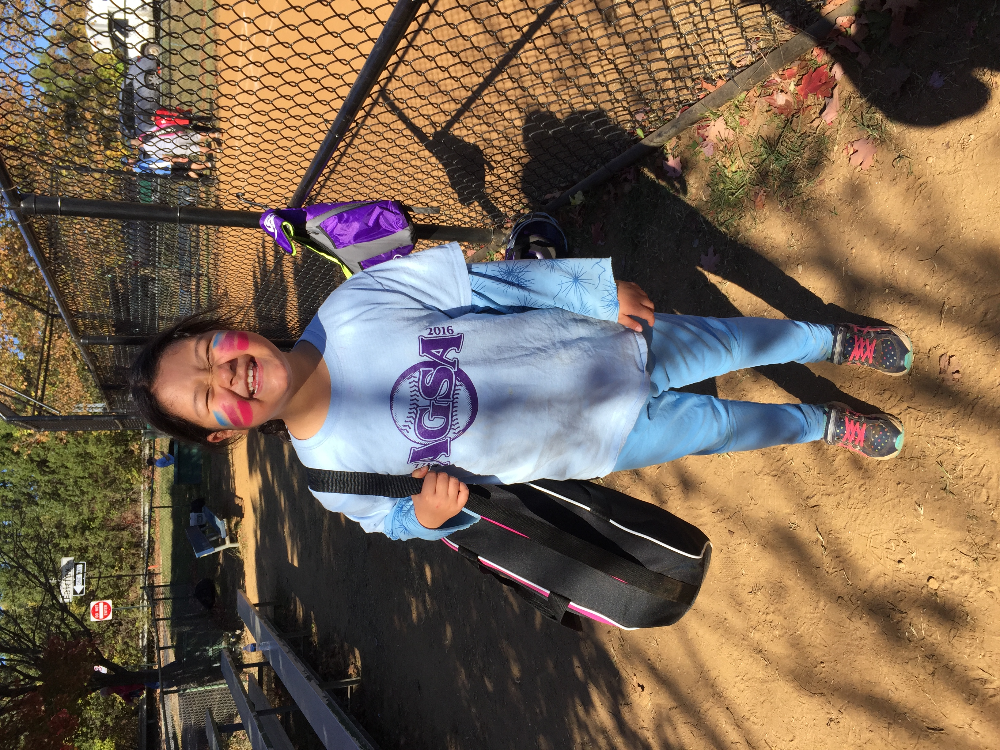

This is the stage when I began exploring interests I tried many sports and eventually stuck with softball
Concrete operational stage (Piaget's Theory)
Erikson's Theory:
Industriousness vs Inferiority begins at age 6 and ends at 11
Identity and role begins at age 12

Years 7-12
Growth spurts begin
Is more jealous of others
Respect others
Can distinguish what is considered right and wrong
More interested in world concepts
This was around the time I learned how to ride a bike
I began playing softball around 6 and still play now
Development of their imagination
Begins self-evaluating and thinking about the perspective of others
Develops fears
More competitive
Puberty begins
Grows a more adult mind-set
Erikson's Theory: Industriousness vs Inferiority (Years 6-11)
- Kids should be able to do a task to completion - When doing or completing tasks, they should feel supported for their effort - If not supported, they may feel judged that they will not live up to your standards - This is the stage when they learn competence
Erikson's Theory: Identity and Role (Years 12-18)
- The time to figure out who you are and gain self-identity - This allows you to face adulthood with confidence - This is the stage when they learn fidelity